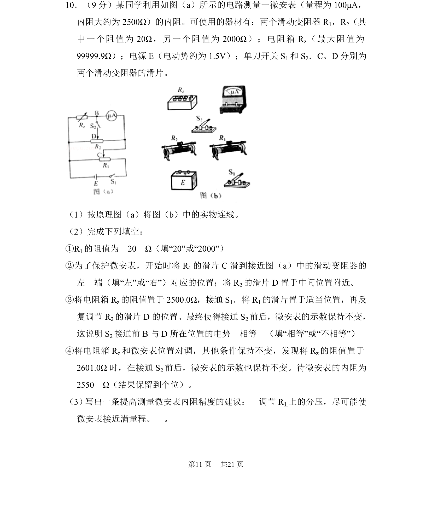
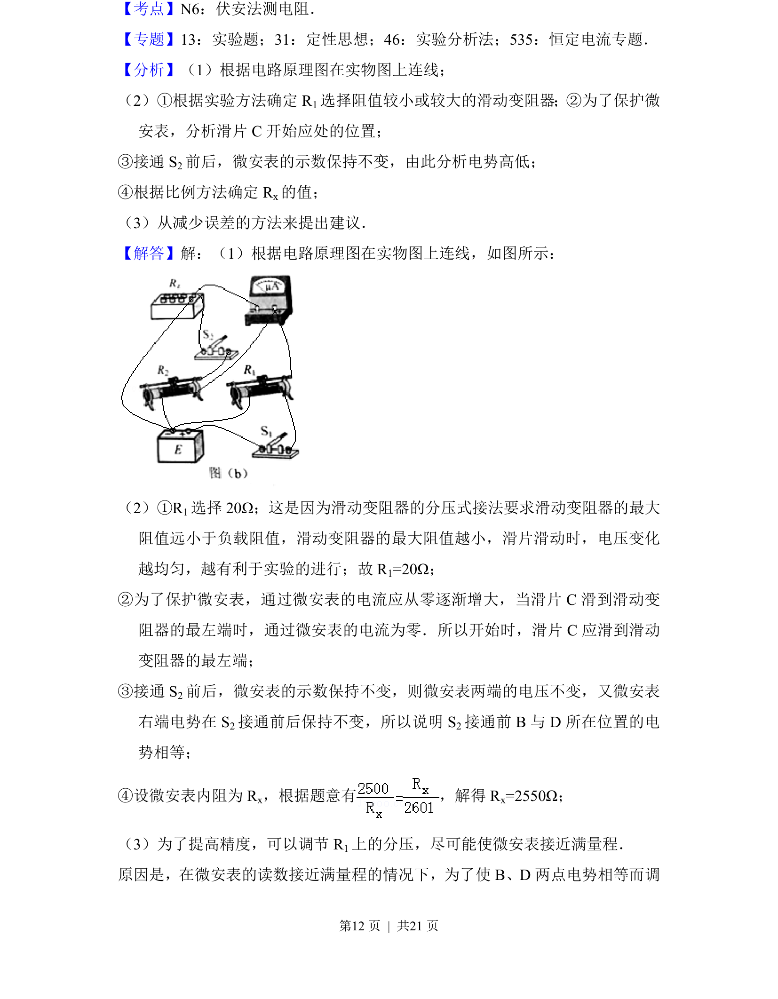
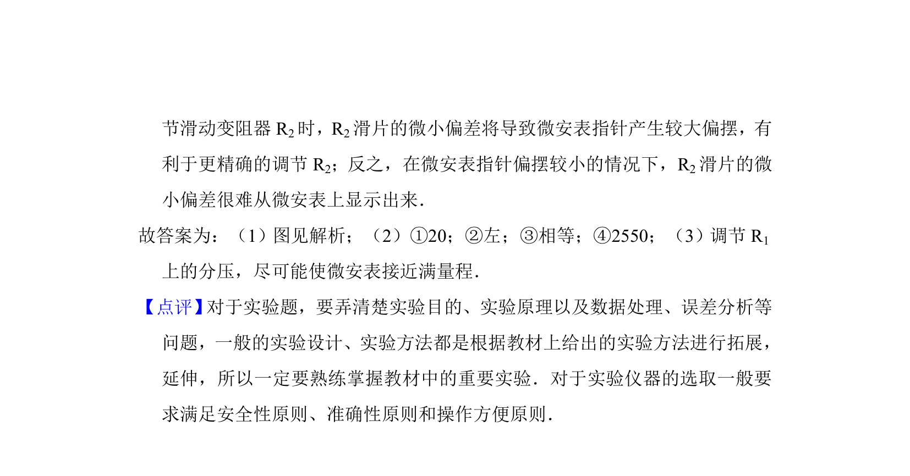

2017-新课标Ⅱ-10
考点：电路实验 电动势 内阻 欧姆定律
题面


摘要
设计并连接用微安表和滑动变阻器测电源电动势及内阻的电路，完成填空并分析测量精度。
关联考点
答案与解析


📄 原 PDF 第 11 页：
素材/真题/吉林/2008-2024·（吉林）物理高考真题/2017年高考物理试卷（新课标Ⅱ）（解析卷）.pdf
题干文本
10．（9分）某同学利用如图（a）所示的电路测量一微安表（量程为100μA， 内阻大约为2500Ω）的内阻。可使用的器材有：两个滑动变阻器R 1，R2（其 中一个阻值为20Ω，另一个阻值为2000Ω）；电阻箱R z（最大阻值为 99999.9Ω）；电源E（电动势约为1.5V）；单刀开关S 1和S 2．C、D分别为 两个滑动变阻器的滑片。 （1）按原理图（a）将图（b）中的实物连线。 （2）完成下列填空： ①R1的阻值为 20 Ω（填“20”或“2000”） ②为了保护微安表，开始时将R 1的滑片C滑到接近图（a）中的滑动变阻器的 左 端（填“左”或“右”）对应的位置；将R 2的滑片D置于中间位置附近。 ③将电阻箱R z的阻值置于2500.0Ω，接通S 1．将R 1的滑片置于适当位置，再反 复调节R 2的滑片D的位置、最终使得接通S 2前后，微安表的示数保持不变， 这说明S 2接通前B与D所在位置的电势 相等 （填“相等”或“不相等”） ④将电阻箱R z和微安表位置对调，其他条件保持不变，发现将R z的阻值置于 2601.0Ω时，在接通S 2前后，微安表的示数也保持不变。待微安表的内阻为 2550 Ω（结果保留到个位）。 （3） 写出一条提高测量微安表内阻精度的建议： 调节R1上的分压，尽可能使 微安表接近满量程。 。